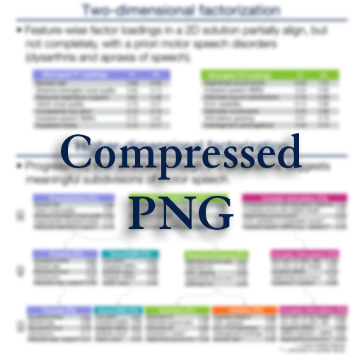
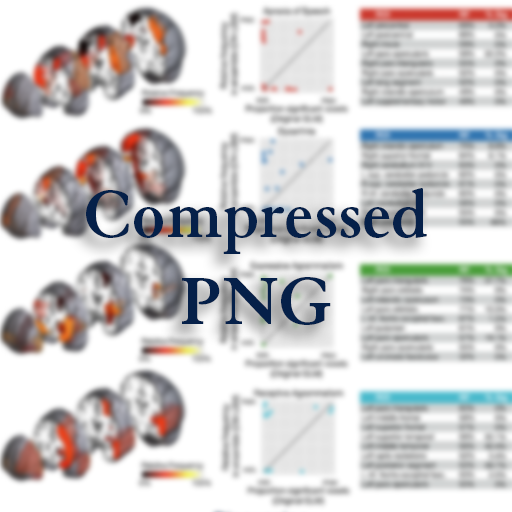

Use the sidebar or buttons to check out the resources associated with my 2026 posters at SNL and ISFTD.
- Lynn

| Feature | Description |
|---|---|
| Slowed rate | Consistently slow rate of speech |
| Fast rate | Consistently atypically fast rate of speech |
| Distorted consonants | Off-target consonants that do not cross a segmental phoneme boundary |
| Distorted vowels | Off-target vowels that do not cross a segmental phoneme boundary |
| Distorted sound substitutions | A distorted, off-target phoneme is produced instead of the target phoneme (e.g., a distorted "v" is produced in place of a "b") |
| Segmental sound errors | Errors in production of individual phonemes of a word; e.g., substitutions, deletions, additions, transpositions) |
| Phoneme prolongations | Prolonged production of vowels and/or consonants |
| Intersegment prolongations | Prolonged gaps between syllables, sounds in consonant clusters, and/or words |
| Increased errors with syllabic length | Increase in segmental sound errors, distortions, or prolonged intersegmental durations as syllabic length increases (e.g., performance on words of increasing length task) |
| Increased errors with articulatory distance | Increase in segmental sound errors, distortions, or prolonged intersegmental duration for words containing adjacent phonemes that require greater articulatory distance to travel between them (e.g., "poke," "cup") |
| Impaired consonant clusters | Impaired production of consonant clusters (e.g., "clean", "grow") |
| Automaticity effect | Improved fluency and/or fewer segmental sound errors with automatic/overlearned speech than with generative speech (e.g., being able to say "I don't know" or count from 1-20 with greater fluency than other output) |
| Impaired initiation | Pauses at the beginning of words, phrases, or sentences; visible struggle to initiate speech |
| Articulatory groping | Visible and/or audible search for the correct articulatory movements and positions of articulators to produce speech |
| Error variability in multisyllabic word production | Variable sound errors across successive productions of the same multisyllabic word (i.e.,performance on multisyllabic word repetition tasks) |
| Errors in timing and/or stress | Suprasegmental errors in the timing of speech and/or stress of syllables, words, and phrases |
| Inappropriate equalized stress | Suprasegmental inappropriate equalized stress across utterance productions |
| Reduced speech variability (monopitch, monoloud) | Reduction in typical pitch or volume variation resulting in flat or monotonous speech |
| Excess loudness variation | Sudden, uncontrolled changes in vocal volume where some speech is produced too loudly and some speech is produced too softly |
| Pitch breaks | Sudden, unintentional shifts in vocal pitch during phonation |
| Consistently low pitch | Consistently atypically low pitch relative to speaker's baseline modal pitch |
| Impaired speech AMRs | Deliberate, slow, segmented, and/or inaccurate speech AMRs (alternating motion rates, as in rapid repetitions of 'puh,' 'tuh,' and 'kuh') |
| Irregular AMRs | AMRs are produced dysrhythmically (alternating motion rates, as in rapid repetitions of 'puh,' 'tuh,' and 'kuh') |
| Rapid, 'blurred' AMRs | Rapid, 'blurred' AMRs (alternating motion rates, as in rapid repetitions of 'puh,’ 'tuh,' and 'kuh') |
| Impaired speech SMRs | Deliberate, slow, segmented, poorly sequenced, and/or distorted SMRs (sequential motion rates, rapid repetitions of 'puh,' 'tuh,' or 'kuh') |
| SMRs more impacted than AMRs | Speech SMRs more impaired than speech AMRs |
| Vocal tremor | A rhythmic shakiness or fluctuation in pitch and/or loudness of the voice |
| Strain-strangled vocal quality | Vocal quality characterized by increased effort during phonation |
| Harsh vocal quality | Rough vocal quality associated with excessive muscular tension and effort |
| Hypophonia | Consistently reduced loudness in speech |
| Hyperphonia | Consistently increased loudness in speech |
| Breathy vocal quality | Continuous airy vocal quality characterized by audible air escape due to incomplete vocal fold closure and excess airflow during phonation |
| Transient breathiness | Transient, intermittent airy vocal quality characterized by audible air escape due to incomplete vocal fold closure and excess airflow during phonation |
| Voicing errors | Producing voiced consonants for voiceless consonants or vice versa |
| Diplophonia | A perceived simultaneous production of two distinct pitches in the voice |
| Vocal stoppages/arrests | Vocal breaks or arrests, periods of aphonicity |
| Poor speech-breath coordination | Reduced words per speech breath group relative to maximum vowel duration |
| Reduced respiratory support | Fewer words per breath, short phrases |
| Short rushes of speech | Short rushes of speech separated by pauses |
| Stridor | Audible inspiration: high-pitched, noisy sound during inhalation |
| Sudden forced inspiration/expiration | Speech is interrupted by sudden, involuntary inspiration or expiration sighs |
| Echolalia | Repetition of others' words or phrases immediately after hearing them |
| Palilalia | Repetition of one's own words or phrases |
| Intrusive schwa | Adding a schwa between syllables or within consonant clusters |
| Inappropriate vocal noises | Nonlinguistic vocalizations that interrupt the flow of speech |
| Nasal emission (audible) | Audible release of air through the nose during speech, often caused by inadequate closure of the soft palate against the back of the throat |
| Consistent hypernasality | Consistently impaired resonance where too much air flows out of the nose during non-nasal sounds, resulting in increased nasality of the quality of non-nasal sounds |
| Intermittent hypernasality | Intermittent impaired resonance where too much air flows out of the nose during non-nasal sounds, resulting in increased nasality of the quality of non-nasal sounds |
| Fasciculations | Spontaneous, involuntary muscle contractions or twitches |
| Choreiform movements | Involuntary, rapid, nonstereotypic, purposeless movements of a body part |
Gorno-Tempini, ML, Hillis, AE, Weintraub, S, Kertesz, A, Mendez, M, Cappa, SF, Ogar, JM, Rohrer, JD, Black, S, Boeve, BF, Manes, F, Dronkers, NF, Vandenberghe, R, Rascovsky, K, Patterson, K, Miller, BL, Knopman, DS, Hodges, JR, Mesulam, MM, & Grossman, M. (2011). Classification of primary progressive aphasia and its variants. Neurology.
Tetzloff, KA, Duffy, JR, Clark, HM, Josephs, KA, Whitwell, JL, & Utianski, RL. (2024). Characterizing speech errors across primary progressive apraxia of speech subtypes. J Speech Lang Hear Res.
Mailend, ML, & Maas, E. (2020). To lump or to split? Possible subtypes of apraxia of speech. Aphasiology.
Illán-Gala, I, Lorca-Puls, DL, Tee, BL, Ezzes, Z, de Leon, J, Miller, ZA, Rubio-Guerra, S, Santos-Santos, M, Gómez-Andrés, D, Grinberg, LT, Spina, S, Kramer, JH, Wauters, LD, Henry, ML, Boxer, AL, Rosen, HJ, Miller, BL, Seeley, WW, Mandelli, ML, & Gorno-Tempini, ML. (2024). Clinical dimensions along the non-fluent variant primary progressive aphasia spectrum. Brain.
Utianski, RL, Duffy, JR, Clark, HM, Strand, EA, Botha, H, Schwarz, CG, Machulda, MM, Senjem, ML, Spychalla, AJ, Jack, CR, Petersen, RC, Lowe, VJ, Whitwell, JL, & Josephs, KA. (2018). Prosodic and phonetic subtypes of primary progressive apraxia of speech. Brain Lang.
Hickok, G, Venezia, J, & Teghipco, A. (2023). Beyond Broca: neural architecture and evolution of a dual motor speech coordination system. Brain.
Kurteff, GL, Walker, GM, Fridriksson, J, & Hickok, G. (2025). Mapping of critical prosodic and phonetic networks in post-stroke apraxia of speech. bioRxiv.
Chalmers, RP. (2012). Mirt: A multidimensional item response theory package for the R environment. J Stat Softw.
Sorry, if you're reading this, I'm still working on the preprint! Drop me an email and I will be sure you get a copy as soon as possible.

Mechelli, A, Price, CJ, Friston, KJ, & Ashburner, J. (2005). Voxel-based morphometry of the human brain: methods and applications. Curr Med Imaging Rev.
Sperber, C. (2020). Rethinking causality and data complexity in brain lesion-behaviour inference and its implications for lesion-behaviour modeling. Cortex.
Walker, GM, Kurteff, GL, Hussain, A, Rorden, C, Bonilha, L, Fridriksson, J, & Hickok, G. (2026). Critical network lesion-symptom mapping. Hum Brain Mapp.
Illán-Gala, I, Lorca-Puls, DL, Tee, BL, Ezzes, Z, de Leon, J, Miller, ZA, Rubio-Guerra, S, Santos-Santos, M, Gómez-Andrés, D, Grinberg, LT, Spina, S, Kramer, JH, Wauters, LD, Henry, ML, Boxer, AL, Rosen, HJ, Miller, BL, Seeley, WW, Mandelli, ML, & Gorno-Tempini, ML. (2024). Clinical dimensions along the non-fluent variant primary progressive aphasia spectrum. Brain.
Lorca-Puls, D, Gajardo-Vidal, A, Mandelli, ML, Illán-Gala, I, Ezzes, Z, Wauters, LD, Battistella, G, Bogley, R, Ratnasiri, B, Licata, AE, Battista, P, García, AM, Tee, BL, Lukic, S, Boxer, AL, Rosen, HJ, Seeley, WW, Grinberg, LT, Spina, S, Miller, BL, Miller, ZA, Henry, ML, Dronkers, NF, & Gorno-Tempini, ML. (2024). Neural basis of speech and grammar symptoms in non-fluent variant primary progressive aphasia spectrum. Brain.
Yourganov, C, Smith, KG, Fridriksson, J, & Rorden, C. (2015). Predicting aphasia type from brain damage measured with structural MRI. Cortex.
I am still working on the manuscript for the work in this poster, but it was heavily inspired by our recent publication in Human Brain Mapping. Give it a read if you are curious about the methods!